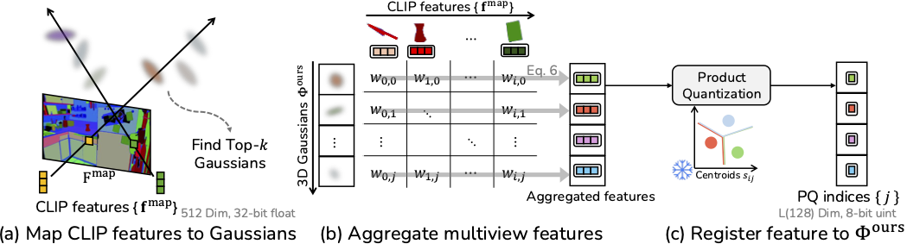
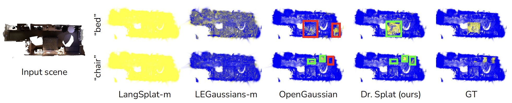
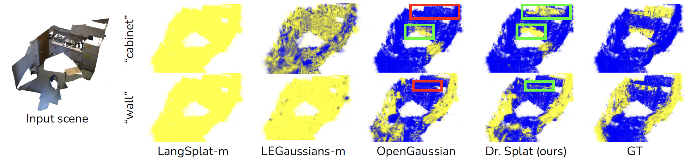

Abstract
We propose Self-Augmented Residual 3D Gaussian Splatting, a novel framework for stabilizing uncertainty quantification
and enhancing uncertainty-aware supervision in Next-Best-View selection for active scene reconstruction.
To efficiently estimate scene coverage, SA-ResGS generates geometry-consistent Self-Augmented point clouds (SA-Points)
via triangulation between observed training views and rasterized extrapolated views. To address the lack of learning
signals in underrepresented regions within sparse, wide-baseline settings, we introduce the first skip-connection-inspired
residual learning strategy tailored for 3DGS. This mechanism amplifies gradient flow to weakly contributing,
high-uncertainty Gaussians. Our contributions are threefold: (1) a physically grounded, diversified view selection strategy;
(2) an uncertainty-aware residual supervision scheme that improves gradient flow and learning stability; and
(3) implicitly debiased uncertainty quantification resulting from constrained view selection and residual supervision.
Experiments on NeRF Synthetic, Mip-NeRF 360, and challenging extended benchmark from Deep Blending and Tanks and Temples
demonstrate that SA-ResGS consistently outperforms state-of-the-art competing methods in both reconstruction quality
and view selection robustness.
Dr. Splat

Dr. Splat directly associates CLIP embeddings with 3D Gaussians for open-vocabulary 3D scene understanding, achieving state-of-the-art 3D perception without rendering.Method


3D object localization


Selected Camera View Distribution

Supplementary Video
BibTeX
@inproceedings{saresgs26,
title={SA-ResGS: Self-Augmented Residual 3D Gaussian Splatting for Next Best View Selection},
author={Jun-Seong, Kim and Oh, Tae-Hyun and Eduardo, Pérez Pellitero and Jang, Youngkyoon},
booktitle=ECCV,
year={2026}
}